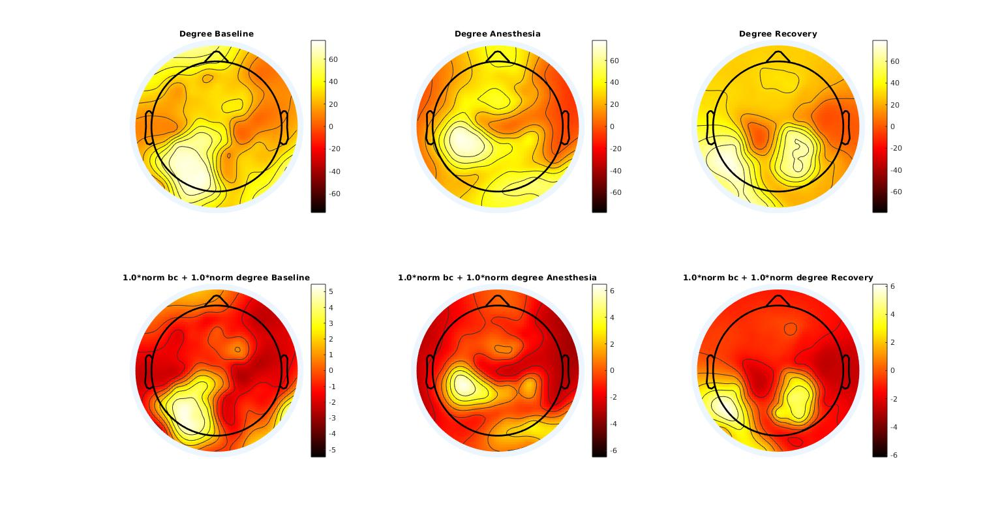

Getting Started¶
This library is used by the BIAPT lab to simplify the analysis of the various computational neuroscience experiment we are running.
Table of Content¶
Code Architecture¶
Features¶
NA comes bundled with a few features that can be used out of the box.
Hub Location¶
A hub is a node in the brain with a lot of incoming connection, but a few outputing connection. We can use the degree to approximate this, however using betweeness centrality help a lot the analysis. The hub location has now two parameter to control how much of the degree and the betweeness centrality we want to take into consideration. Below you will see the hub location definition we've build using the Brain Connectivity Toolbox.
Concretely this is how we can use the na_hub_location.m functino:
recording = load_set('name_of_data.set',path_to_data);
frequency_band = [7 13];
window_size = 10;
number_surrogate = 10;
p_value = 0.05;
threshold = 0.10;
step_size = 10;
a_degree = 1.0;
a_bc = 1.0;
result_hl = na_hub_location(recording, frequency_band, window_size, step_size, number_surrogate, p_value, threshold, a_degree, a_bc);
For more detailed help type help na_hub_location at the MATLAB command prompt.
The definition of a hub we are using is the following:
hub = Max of (a_bc*norm_betweenes_centrality + a_degree*norm_degree)
This is given by the following code:
function [hub_location] = betweeness_hub_location(b_wpli, location, a_degree, a_bc)
%BETWEENESS_HUB_LOCATION select a channel which is the highest hub based on
%betweeness centrality and degree
% b_wpli: binary matrix
% location: 3d channels location
%% 1.Calculate the degree for each electrode.
degrees = degrees_und(b_wpli);
norm_degree = (degrees - mean(degrees)) / std(degrees);
%% 2. Calculate the betweeness centrality for each electrode.
bc = betweenness_bin(b_wpli);
norm_bc = (bc - mean(bc)) / std(bc);
%% 3. Combine the two metric (here we assume equal weight on both the degree and the betweeness centrality)
weights = a_degree*norm_degree + a_bc*norm_bc;
%% Obtain a metric for the channel that is most likely the hub epicenter
[~, channel_index] = max(weights);
hub_location = threshold_anterior_posterior(channel_index, location);
end
Here are example of the topographic maps obtained by this method as compared to only using the degree across state of consciousness
MDFA03 (Healthy)¶

MDFA05 (Healthy)¶
MDFA06 (Healthy)¶

MDFA07 (Healthy)¶
References¶
- Brain Connectivity Toolbox : This is a library written in MATLAB which is used to do graph theory on brain signals. We use it to build much of our graph theory related analysis.